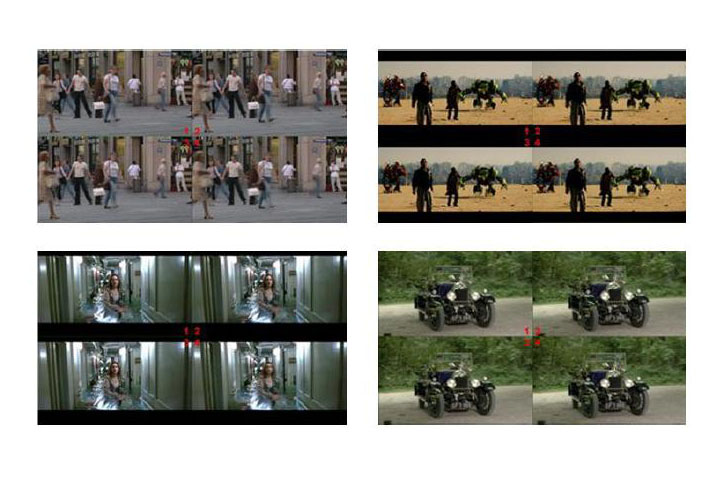

Frame Rate Up-Conversion
Prelude
Frame rate up-conversion is a technique that up-converts the frame rate of video sequence by analyzing the object motion of it and interpolating two or more frames (Fig. 1). This technique is applied on LCD for eliminating the LCD motion blur problem in recent years as more frame rate can reduce the blur width (Fig. 2). I developed a multi-rate frame rate up-conversion algorithm and architecture that is compatible to current standard of LCD system which can convert up to 3840x2160 Quad HD frame size with 24Hz to 120Hz up-conversion and 60Hz to 120Hz up-conversion mode.
Fig. 1 - Overview
Fig. 2 - Motion blur reduction with higher frame rate
Fig. 3 - Overall algorithm
The proposed algorithm flow is shown in Fig. 3. The motion estimation and MV processing are true motion based with Markov random field modeling, which generate the reliable motion vector field in Fig. 4. For sub-block division, I provide a simple and precise way that guarantee to detect the region with artifact that often happen in moving objects as in Fig. 5. The post-processing refines those sub-blocks with correct motion vectors and results in better visual quality (Fig. 6).
Fig. 4 - MVF by motion estimation
Fig. 5 - Sub-block region
Fig. 6 - Examples of post-processing
Architecture
Fig. 7 shows the overview of the architecture that many of modules share the same computation unit and SRAM. The special scan order with ping-pong SRAM usage is showed by Fig. 8 for pipeline bubble reduction. There is a unit (Fig. 10) that group the motion vectors lie within a range in for frame data sharing. The motion compensation require large amount of data read/write, so I provide an inverse compensation scheduling that only read 1 frame and write it to 4 frames in 1:5 up-conversion, which consumes minimum amount of bandwidth and processing (Fig. 9).
Fig. 7 - Ping-pong SRAM usage
Fig. 8 - Overview of architecture
Fig. 9 - Inverse scheduling
Fig. 10 - Motion vector grouping unit
Results
Fig. 11 shows that the design provides 24Hz to 120Hz and 60Hz to 120Hz up-conversion for 3840x2160 frame size with only 273K gate count and 9984 bytes single port SRAM which has the best hardware efficiency comparing to previous works [1] [2]. I select four sequences (Fig. 12) up-converted by different algorithms [1] [2] [3] for performance evaluation. For subjective evaluation, subjects vote the best one of their own, and the final shows that above 79% of subjects prefer the proposed algorithm (Fig. 13). For objective evaluation, I compare the PSNR of up-converted frames to the original ones in 12Hz to 24Hz conversions. The PSNR of the proposed algorithm is also higher than other methods (Fig. 14). Fig. 13 - Subjective evaluation result
Fig. 11 - Design specification and hardware efficiency comparison

Fig. 12 - Sequences for evaluation
Fig. 13 - Subjective evaluation result
Fig. 14 - Objective evaluation result
References
- [1 - GME] Hsu Kung-Yen, Shao-Yi Chien, Frame Rate Up-Conversion Algorithm and Hardware Architecture Design for High Definition Liquid Crystal Display, Master thesis of GIEE, NTU, Nov. 2008
- [2 - Percept.] Ya-Ting Wang, Shao-Yi Chien, Algorithm and Hardware Architecture Design of Perception-Aware Motion Compensated Frame Rate Up-Conversion, Master thesis of GIEE, NTU, Feb. 2010
- [3 - Yang] Ya-Ting Yang Yi-Shin Tung Ja-Ling Wu, Quality Enhancement of Frame Rate Up-Converted Video by Adaptive Frame Skip and Reliable Motion Extraction, IEEE Transactions on Circuits and Systems for Video Technology, Dec. 2007, pp.1700 - 1713